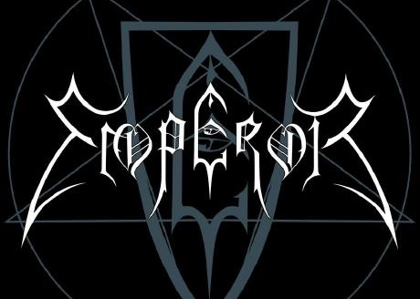

Kezdetek!

Kezdtünk valamikor egy messzi-messzi galaxisban már a Mátrixon túl, de még a feltámadások előtt. És mégis a mi galaxisunkban egyszer csak pár elvetemült elme, azt hitte majd jól megtanul programozó és tesztelő lenni. Mindez történt a 2021. november... Napjainkban is tart ennek az elmeroggyant társaság összetartása és hite abban, hogy ezt valaha is meg fogják tudni tanulni. Mindenki által tudott, hogy mennyire lassúak és nehézkesek vagyunk (tisztelet a kivételnek)/mármint akik nem tudják 8-)/...... Sorolhatnám még mennyire is jók vagyunk, de NEM vagyunk azok. Inkább... na ez már ki sem fér ide mert....
Alább egy táblázat az elmeroggyant esti csapatról, majd alább azokról, akik minket elszántan és fáradságot, óraszámot és energiát nem kímélve próbálkoznak némi hasznos információt a fejünkbe tuszkolni.
| VEZETÉK |
Kereszt |
Beoszthatatlanság |
| VARGA |
Viktória |
hihetetlen mennyiségű jegyzetek elkészítője |
| BARTHA |
Imola |
sok munkával szorgos (web tartalom) anyag gyüjtő |
| X & Y (Nem ismeretlen, de változó) |
Dávid és Dávid |
fiatal háromdimenziós négyzetek és kóderek |
| BORZA |
Barnabás |
fotó és design |
| GAJDOS |
Gábor |
hajcsár és főkopé |
HORVÁTH Attila
Két tárggyal és további témával is a nyakába szakadtunk. Legnagyobb bánatára hetente 2 alkalommal is éreztetjük vele mennyire nagyon tudunk még figyelni és érdeklődni. Minden próbálkozása ellenére azért az osztály kezdi elhasználni a maradék erejét is, de kárpótlásul próbálkozásainkkal elfogadható dolgozatokat írtunk. Legnagyobb szomorúságára, rá kellett ismerjen a csapat gyengéire, nem tudjuk megérteni miért is kell azt az IP-t kiszámolni, ha ott van az a fránya számítógép, aminek az lenne a dolga (persze csak azért, mert egy olyan, aki ezt már megtanulta ügyesen le is tudta programozni). Persze-persze, ahhoz meg is kéne érteni, de mi nem ezek vagyunk! Mi az új és újabb egyszerű megoldás felé törekszünk.
JUHÁSZ Zoltán

Egyenlőre csak a Pyhton alapok ismereteivel próbálja sokszor már egy táncos komikus tudásával vetekedve az elmeroggyant csapatnak átadni a tudásának azon morzsáit, amit még mi is meg-megértünk, amikor ott van és éppen azt magyarázza el számunkra. Majd mint egy kis elefánt, nehezen tanulunk és könnyen felejtünk, már következő órára eljutunk megint a bemutatkozás és a kezdő programozói környezet kialakításáig, ahol is hipp-hopp megalkotjuk első sorainkat, amiben ijesztgetjük mi is a világot, hogy reszkessen, mert jönnek az új programozók, akik a Mátrixot kódolás nélkül sem értenék, nem, hogy így futás közben.
^
"Jó osztálytárs nem csak ígér, be is tart."
- By: Gajdi